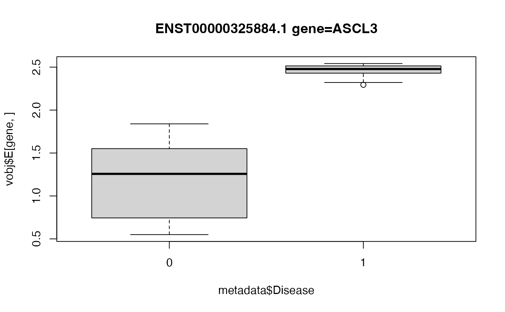

Test the association between a covariate of interest and the response's deviation from expectation.
Value
MArrayLM object storing differential results to be passed to topTable()
Details
This method performs a test of differential variance between two subsets of the data, in a way that generalizes to multiple categories, continuous variables and metrics of spread beyond variance. For the two category test, this method is simular to Levene's test. This model was adapted from Phipson, et al (2014), extended to linear mixed models, and adapted to be compatible with dream().
This method is composed of multiple steps where 1) a typical linear (mixed) model is fit with dream(), 2) residuals are computed and transformed based on an absolute value or squaring transform, 3) a second regression is performed with dream() to test if a variable is associated with increased deviation from expectation. Both regression take advantage of the dream() linear (mixed) modelling framework followed by empirical Bayes shrinkage that extends the limma::voom() framework.
Note that diffVar() takes the results of the first regression as a parameter to use as a starting point.
References
Phipson B, Oshlack A (2014). “DiffVar: a new method for detecting differential variability with application to methylation in cancer and aging.” Genome biology, 15(9), 1--16.
See also
missMethyl::diffVar(), car::leveneTest()
Examples
# library(variancePartition)
library(edgeR)
data(varPartDEdata)
# filter genes by number of counts
isexpr <- rowSums(cpm(countMatrix) > 0.1) >= 5
# Standard usage of limma/voom
dge <- DGEList(countMatrix[isexpr, ])
dge <- calcNormFactors(dge)
# make this vignette faster by analyzing a subset of genes
dge <- dge[1:1000, ]
# regression formula
form <- ~Disease
# estimate precision weights
vobj <- voomWithDreamWeights(dge, form, metadata)
# fit dream model
fit <- dream(vobj, form, metadata)
fit <- eBayes(fit)
# fit differential variance model
res <- diffVar(fit)
# extract results for differential variance based on Disease
topTable(res, coef = "Disease1", number = 3)
#> logFC AveExpr t P.Value
#> ENST00000325884.1 gene=ASCL3 -0.3412386 0.2331510 -4.861381 5.876367e-05
#> ENST00000309971.4 gene=GLE1 -0.7335446 0.5318544 -4.656878 9.887849e-05
#> ENST00000410040.1 gene=IL18R1 -0.4331105 0.3614958 -4.611809 1.109038e-04
#> adj.P.Val B
#> ENST00000325884.1 gene=ASCL3 0.03134491 1.851675
#> ENST00000309971.4 gene=GLE1 0.03134491 1.387689
#> ENST00000410040.1 gene=IL18R1 0.03134491 1.285258
# Box plot of top hit
# Since ASCL3 has a negative logFC,
# the deviation from expectation is *smaller* in
# Disease==1 compared to baseline.
gene <- "ENST00000325884.1 gene=ASCL3"
boxplot(vobj$E[gene, ] ~ metadata$Disease, main = gene)
